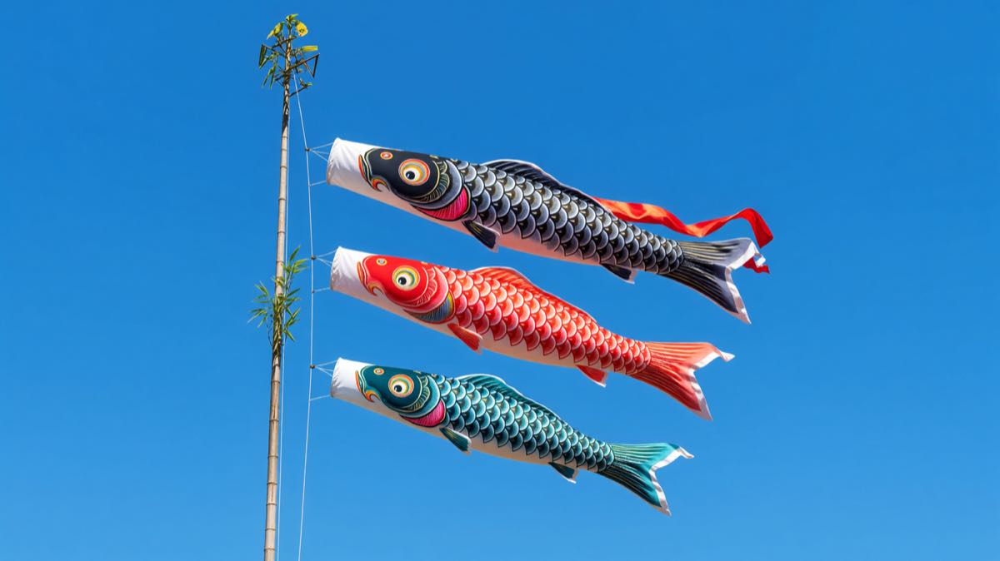
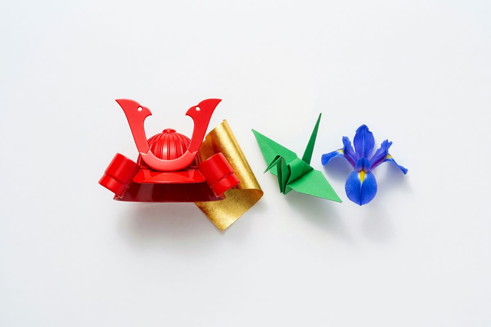
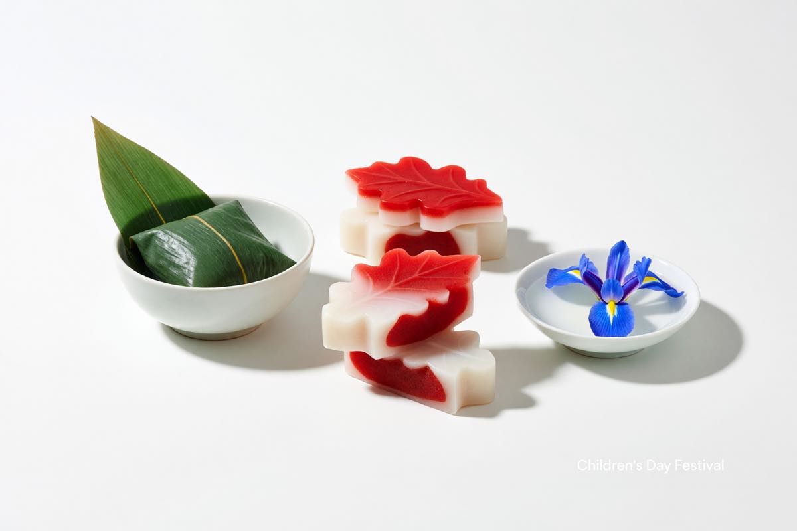
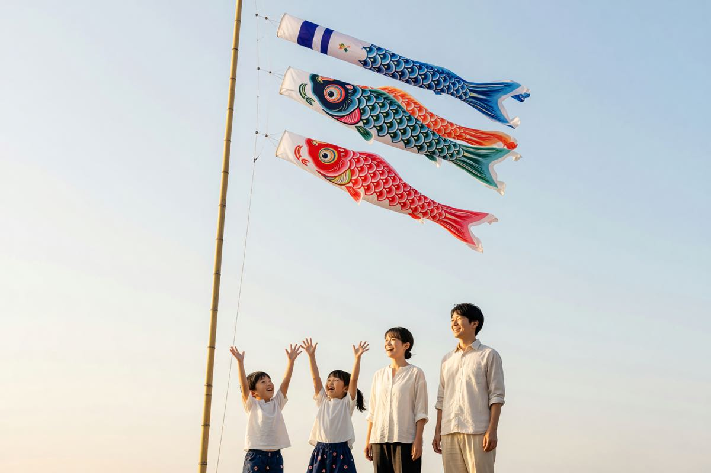

Kabuto helmet
A samurai helmet displayed in the home — a wish for courage, and for a child who will hold their own.
Koinobori is the carp-streamer festival of Kodomo no Hi — a morning of bamboo poles, bright fabric, and the wish that every child grows strong enough to climb the current.
On the morning of May 5, families raise a pole outside the house and fly a stack of carp-shaped windsocks — each one a wish for a child in the family. The biggest carp rides at the top; the smallest at the bottom.

The stack is read from the top down. Each fish carries a different colour and a different wish — for the father, the mother, and each child in turn.
Beyond the streamers, the day is marked by a handful of small, deliberate customs — each one a way of wishing a child well.

A samurai helmet displayed in the home — a wish for courage, and for a child who will hold their own.
Gold leaf laid at the foot of a Buddha or on the family altar — a wish for prosperity and a long life.
A folded crane — for patience, for a long life, and for the slow, careful work of growing up.
Iris leaves placed in the bath — the word shobu shares a sound with shōbu, the spirit of victory.
The food of Kodomo no Hi is small, deliberate, and shaped by the season. Each dish carries a wish — for strength, for sweetness, for the long road ahead.

Sweet rice cake wrapped in an oak leaf. The oak drops its leaf only when the new one is ready — a wish that the next generation will follow the last.
A rice dumpling wrapped in a bamboo or iris leaf, steamed and tied with a cord. A wish for protection, and for the strength of the bamboo itself.
Sake warmed over a shobu iris leaf. The leaf gives the drink a clean, faintly bitter edge — and the wish for victory that the iris carries.
Red rice — sticky rice steamed with azuki beans. Served on celebratory days across Japan, and on Kodomo no Hi in particular.
The carp do not swim sideways. They swim up. And so, on this one morning in May, every house in every town has a small river of fabric running toward the sky.
— A note on the day

A full schedule of the celebration — ceremonies, food stalls, performances, and the evening lantern release. The companion page carries the complete programme.
The celebration spreads across the riverside park and the streets that lead to it. Most of the day is outdoors; the workshops and food stalls run rain or shine.